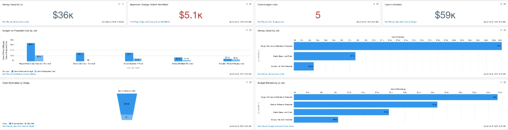
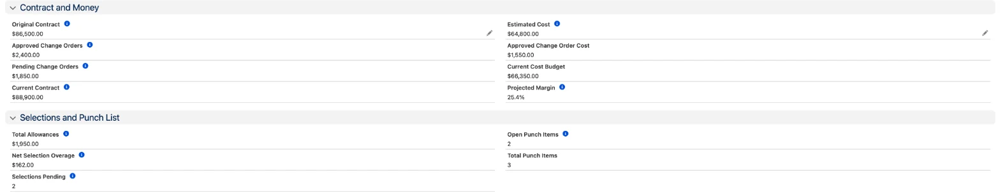
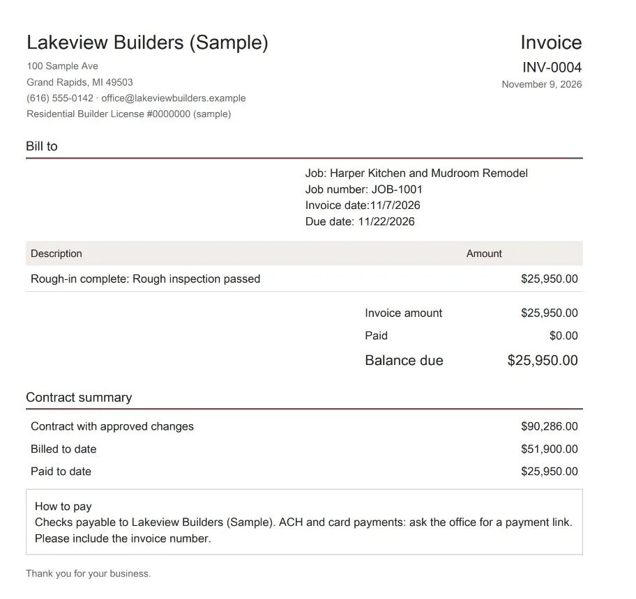

For contractors already on Salesforce
Estimate, build and bill every job in Salesforce
Build estimates from your own price list. Win the job and the budget is ready. Track every cost code against subs and bills, price change orders from the same list, and bill each draw when it comes due. Homeowners approve change orders and see their project in a portal. All inside your own Salesforce.
Built for Salesforce Enterprise and higher. Pro Suite is being tested now.

What's inside
One system from first estimate to final invoice
Price list and estimates
Your items with cost codes, your cost and your price. Estimates are built from the list and show cost and margin on every line before you send them.
Job budget by cost code
Win the estimate and the job and its budget are created for you. Each cost code shows budget, committed, actual and what is left.
Subs, POs and bills
Subcontracts and material orders count as committed cost the day you issue them. Bills post as actual cost. A sub with no current insurance certificate can't be marked paid.
Change orders
Priced from the same list. The homeowner approves in the portal by typing their name, and the date and time are recorded. Approved cost goes straight into the job budget, and the price is locked.
Draws, invoices and payments
Set a draw schedule. When a phase is finished, the draw is flagged ready to bill and you get a task. Invoices print with the balance due and contract-to-date totals. Retainage is recorded on the job but not held back on invoices yet.
Schedule and daily logs
Phases with dates and a late flag. Percent complete comes from the schedule. Daily logs record weather, crew and work done, with internal notes the homeowner never sees.
Selections
Every client choice against its allowance, with a decision deadline and an order-by date. Pick from the price list and the cost fills in.
Punch list and warranty
Items by room and trade, assigned to a sub, with due dates. After closing, homeowners submit warranty requests in the portal.
Sub compliance
Insurance certificates, licenses, W-9s and lien waivers for every sub, with reminder tasks 30 days, 7 days and the day they expire.
Job costing
Know where the money is on every job

- Money owed to you, by job, with days past due.
- Approved change orders that were never billed. On the sample company that was $5,100 across four jobs.
- Every budget line that is over, and how much budget is still uncommitted.
- Billed vs earned on each job, so you know if you are ahead or behind on billing. Earned is based on how many schedule phases are complete.
- Open estimates by stage, with the margin on each one.
Paperwork
Estimates, change orders and invoices that print with your name on them

Automation
The follow-up tasks are made for you
- Win an estimate and the job, its budget lines and the project manager are set up for you.
- Pick an item from the price list on an estimate, change order or selection and the cost, price and cost code fill in.
- A change order's price comes from its lines. Once approved, its cost is added to the budget and it can't be quietly edited.
- Finish a schedule phase and the draw tied to it is flagged ready to bill, with a task to send the invoice.
- Set a draw to Invoiced, or mark a change order billed, and a draft invoice is created. Review it, mark it Sent, then print or email the PDF.
- A homeowner approves or declines in the portal and you get a high-priority task right away.
- A sub's bill can't be marked paid without a current liability certificate on file.
- Every morning, a task lands on your list when a sub's insurance or license expires in 30 days, in 7 days, or today.
Homeowner portal
Give clients a login instead of another phone call
Homeowners sign in to see their own job: the schedule, daily progress notes, selections, the punch list and their invoices. They approve or decline change orders by typing their name, with the date and time recorded, and can print a copy. After closing they submit warranty requests there.
They only ever see their own project. Your costs, margins and other clients stay hidden.
How it works
From demo to running jobs
Demo
A short walk-through on a sample job, so you can see if it fits how you work.
Setup
Installed in your Salesforce with your price list, cost codes, draw schedule, terms and company details on the PDFs.
Your data
Current jobs, subs and certificates brought in, so day one isn't a blank screen.
Training
Your team learns it on their own jobs, with ongoing help available if you want it.
Questions
FAQ
Do I need to already have Salesforce?
Yes. This is set up inside your own Salesforce, on Enterprise or higher. Pro Suite is being tested now. If you're not on Salesforce yet, ask in the demo and we'll talk it through honestly.
Does it replace QuickBooks?
No. It runs the job side: estimates, budgets, change orders, draws and invoices, schedules and sub paperwork. Your books stay in QuickBooks. There is no automatic sync: your bookkeeper enters invoices, payments and bills there. There is no crew time tracking yet, and field crews use the Salesforce mobile app. Invoices and bills here are for tracking the job, and your bookkeeper still records them in your accounting.
Can we change it?
Yes. It's built with standard Salesforce objects, fields and flows, so your admin, or we, can add fields, change picklists and adjust the automation.
We use your spreadsheets now. What happens to that data?
We can import your jobs, change orders and subs from your spreadsheets during setup.
Is this made by Salesforce?
No. It's an independent setup built on the Salesforce platform. Salesforce is a trademark of Salesforce, Inc.
See it on a real job
Book a demo
Send a note with your company name, how many people use Salesforce, and which edition you're on. You'll get a time for a short walk-through.
Email to book a demo